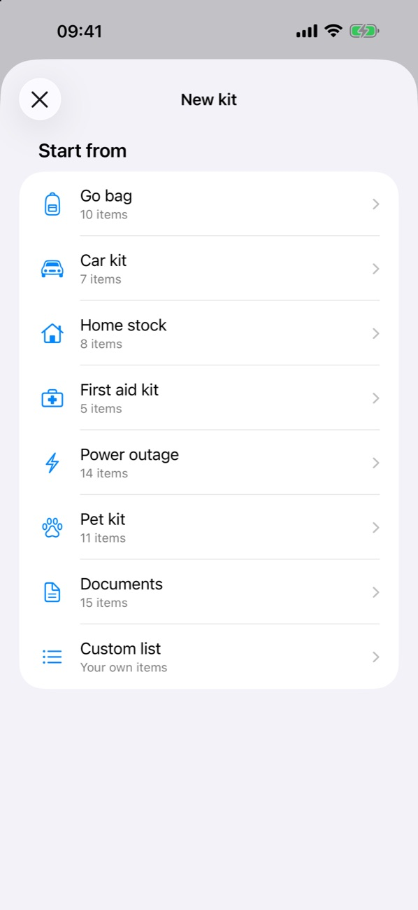
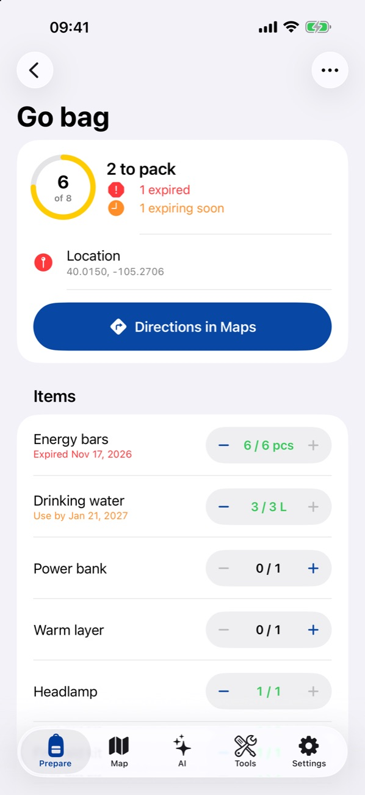
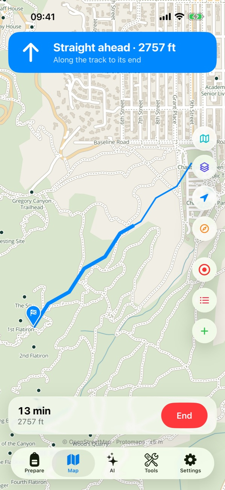
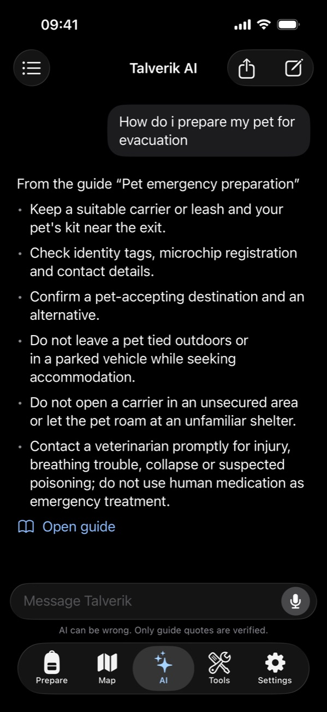

Talverik is not an emergency service. In an emergency, call your local emergency number. Guides and AI answers are general information, not professional advice. Maps are for orientation, not turn-by-turn navigation or complete hazard coverage. Requires iOS 26 or later.
Emergency prep for iPhone
Ready for any emergency. Even offline.
Pack your go bag, track every supply, and keep maps, documents and a private AI ready — no internet, no subscription.
- Works offline
- No subscription
- Private


Go bag
Pack your go bag the right way
Start from a ready-made kit instead of a blank list, then make it yours: add, remove and rename anything.
- Go bag, car, home, first aid, power outage, pet and documents
- Or a custom list of your own
- Phone readiness: the settings worth checking before you need them

Supplies
Track every supply, like a pantry
Know what you have, how much of it, and what is running out or about to expire.
- Amounts and expiry dates
- Find an item by its barcode
- Kits inside kits, and reminders before things expire

Offline maps
Offline maps of your region
Download a detailed map of your region once. After that it works anywhere, with no internet at all.
- Streets, buildings and important places
- Save places and find them again
- Compass and GPS position

Tracks
Record your route, find the way back
Record where you walk or drive, then follow it back step by step, even offline.
- Record tracks in the background
- Follow a track to its start or end
- GPX import and export

Private AI
A private AI. No internet.
A small AI model runs on your iPhone. Ask in your own words; when a practical guide fits, it uses the guide.
- Nothing you ask leaves the phone
- No subscription; a one-time download of about 1.5 GB
- Works on compatible iPhones; it can make mistakes

Documents
Your papers, locked and ready
Keep scans of the documents you would need after leaving home, on the phone that is always with you.
- Scan with the camera or import PDFs
- Face ID lock
- Searchable text
Pay once. Everything included.
Practical guides, compass, Morse light and sound, calculators and a journal are all in the app. Back up to Files or iCloud Drive whenever you like.
One purchaseNo subscription and no in-app purchases.
No accountNothing to sign up for, no ads.
Nothing collectedNo analytics or tracking. Your data stays yours.